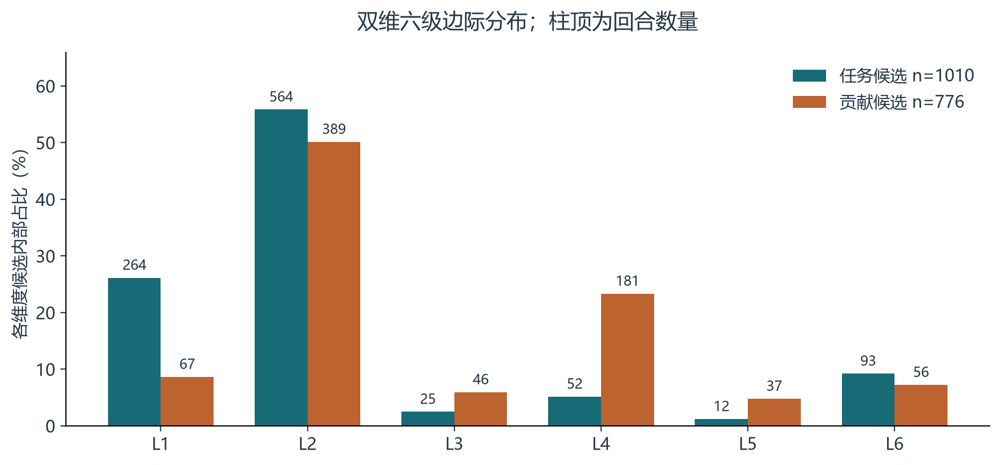
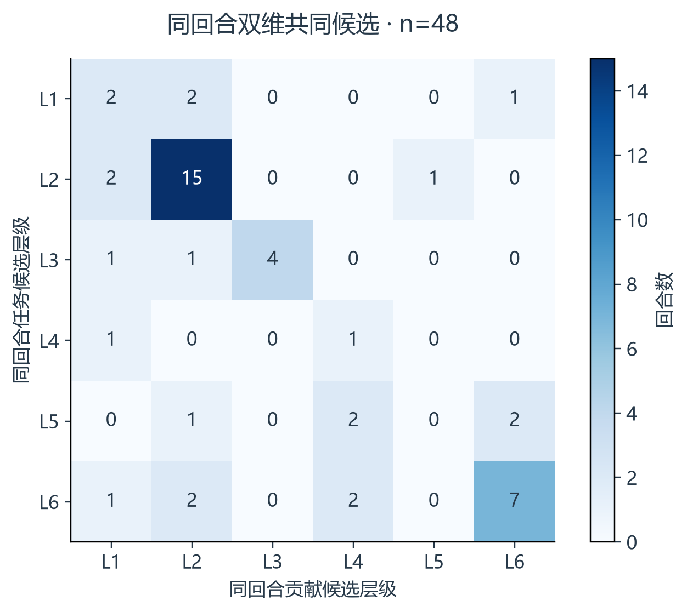
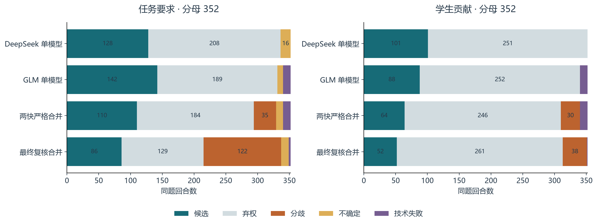
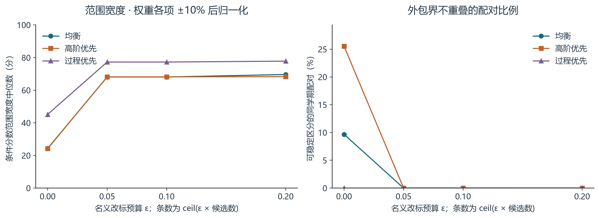
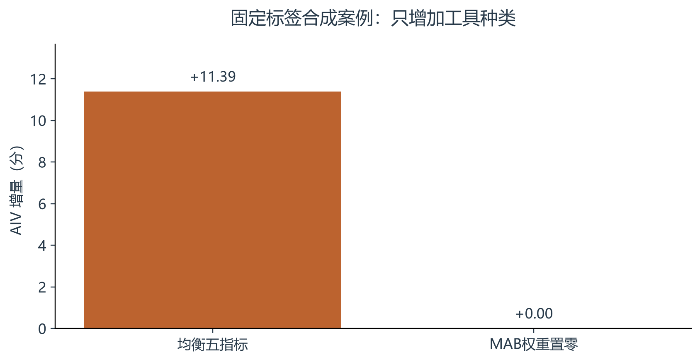
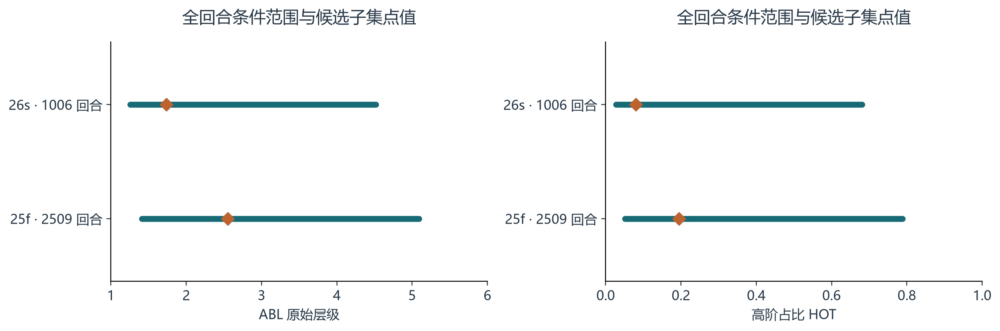
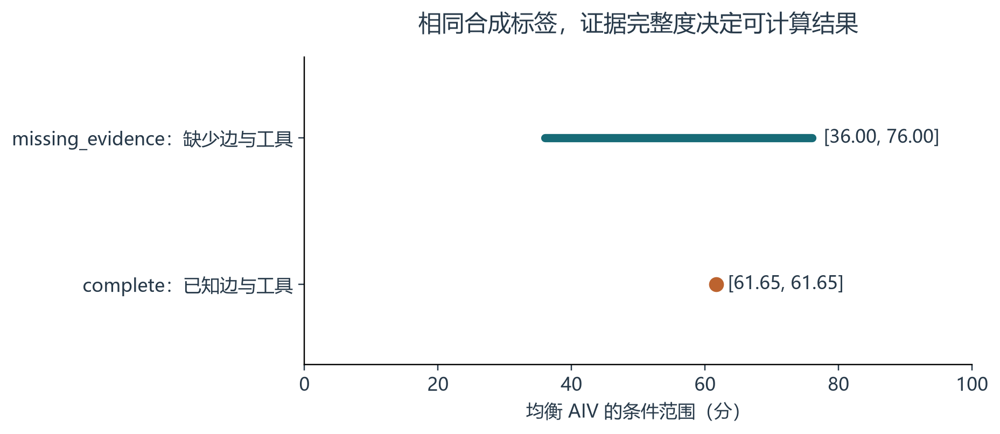

真实数据各维度分别以自身候选为分母；两个候选集合并非同一批回合。final-dimension-level-distribution · 09PDF · SVG · PNG · 来源
真实数据48条同回合双维非空候选；任务较高13条、相同29条、贡献较高6条。final-joint-candidate-levels · 09PDF · SVG · PNG · 来源
真实数据固定随机复核子集的同题状态比较；每种方法、每个维度均保留全部352回合。final-random-review-flow · 02PDF · SVG · PNG · 来源
条件范围分析356个有任务候选的学生—学期单位；按ceil(εn)改标，缺失CTQ及工具情景保留；稳定配对仅在同学期内比较。final-score-range-sensitivity · 05PDF · SVG · PNG · 来源
合成实验同一固定标签案例的工具堆叠增量；MAB权重置零也移除了工具广度奖励。final-tool-stacking-comparison · 06PDF · SVG · PNG · 来源
条件范围分析线段为未知标签任取L1–L6的条件范围，菱形为候选子集点值；已判定标签暂视为正确。final-unknown-label-bounds · 05PDF · SVG · PNG · 来源
合成实验已保存合成标签的现场计算；缺少会话边和工具时保留null指标及条件范围。synthetic-live-evidence-chain · 07PDF · SVG · PNG · 来源